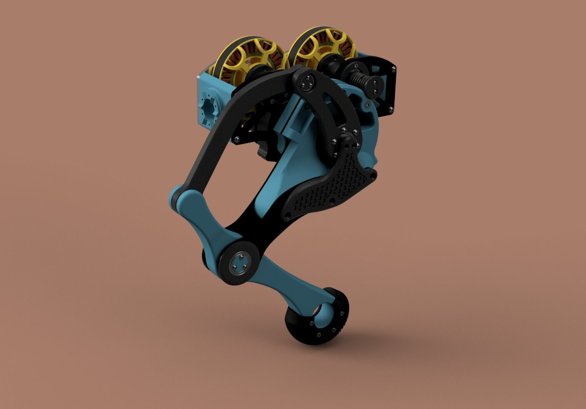

01 — MECHANICAL SYSTEM
Custom capstan actuation
Custom cable-based transmissions and a five-bar leg mechanism designed for compact, responsive joint actuation.

INDEPENDENT ROBOTICS PROJECT
Capstan Actuated
Robot Locomotion
A custom-built quadruped exploring mechanical design, cable-driven actuation, embedded systems and legged robot control.
01 / PROJECT OVERVIEW
CARL is a personal quadruped robotics project focused on developing and integrating the complete mechatronic system — from mechanical transmission design to embedded motor control.
The platform combines custom capstan actuation, brushless motors, Moteus motor controllers and a Raspberry Pi-based control system. Development is ongoing, with current work focused on coordinated motion and leg kinematics.
This page documents implemented features and work in progress separately.
02 / HARDWARE
Designed, assembled and tested as an integrated robotics platform.
Custom cable-based transmissions and a five-bar leg mechanism designed for compact, responsive joint actuation.

Three actuated degrees of freedom per leg, using BLDC motors and Moteus motor controllers.
Raspberry Pi 4 with Pi3Hat and CAN-FD communication across four motor buses.
03 / SOFTWARE & CONTROL
A modular Python control stack connecting user input, kinematics and motor commands.
The startup routine homes joints in stages across all four legs, using motor stalls to detect endstops.
A geometric model calculates joint angles for target foot positions. Full 3D integration is in development.
The Raspberry Pi sends commands to 12 Moteus controllers through the Pi3Hat, with one CAN-FD bus per leg.
A Bluetooth Xbox controller sends stick and button inputs to the Python control stack for manual operation.
INTERACTIVE / CONTROL ARCHITECTURE
Select a component to see how commands travel through CARL's Raspberry Pi, Pi3Hat and four CAN-FD buses to its 12 motors.
Conceptual data-flow diagram, not an electrical wiring schematic. Joint IDs are CARL's configured assignments; the architecture is not a claim of autonomous walking capability.
04 / INTERACTIVE KINEMATICS
Try CARL's analytical inverse kinematics yourself. Drag the foot, adjust the link geometry, and visualize the reachable workspace.
For coaxial motor shafts and equal opposite links, the parallelogram reduces to a triangle with effective lengths L₂ = 170 mm and L₄.₂ = 150 mm and a fixed distal kink δ = 15°. The following derivation uses the cosine rule, with x forward and z downward. It is an ideal geometric model, not a verified copy of the onboard Python controller.
The signed lateral offset is o. The frontal foot inclination η is measured from the downward vertical.
The reduced planar triangle connects the coaxial motor axis O, knee K and foot F.
γ is the signed inclination of OF from downward vertical; β is the internal angle between OF and OK; α is the internal knee angle between KO and KF.
Using the upper and lower link lengths:
For the illustrated assembly branch, q is measured from downward vertical.
The fixed kink is δ = 15°. The website convention measures joint angles clockwise from upward vertical. The opposite leg requires reflection and its own motor signs.
Here i is the reduction ratio and s is the calibrated motor direction. Use continuous angle differences across the wrap boundary.
Adjust the target coordinates in millimetres. The lateral offset defaults to an illustrative 40 mm. This visualization checks triangle reachability only; physical joint limits, collisions and calibration are not included.
γ — foot inclination · β — upper link to foot line · α — internal knee angle
05 / DEVELOPMENT LOG
Selected development milestones and next steps.
Custom leg architecture, capstan drives, BLDC motors and motor-controller integration.
Coordinated multi-motor homing sequence with endstop detection and position holding.
Developed an analytical inverse kinematics solution for the planar five-bar leg mechanism and tested target foot positioning on a single-leg bench setup.
Integrating 3D inverse kinematics and coordinated leg positioning.
Develop coordinated stepping sequences, swing and stance trajectories, and smooth transitions between standing and walking. Test stable locomotion before increasing speed or introducing more complex gaits.
Evaluate depth sensing for detecting obstacles and stair edges, estimate safe foothold locations, and use terrain information to adapt foot trajectories for uneven ground and stair climbing.
06 / ROBOT IN MOTION
Real hardware tests, joint motion and the journey toward autonomous locomotion.
Two-legged and full-body jumping experiments on the physical robot.
Interactive body positioning using an Xbox controller.
Suspended controlled foot placement for all four legs.
Robot standing posture and body tilt testing.
Controlled vertical body movements while standing.
Coordinated motor homing and joint calibration.
Single-leg motion testing and foot positioning.
Evaluating the mechanical response of the capstan-driven joints.
07 / PHOTO GALLERY
Mechanical details, electronics, prototypes and progress captured along the way.
Images of CARL's design and development will appear here.
08 / ENGINEERING SKILLS
Practical skills developed while designing, building and programming CARL — connected to real project work.
From CAD assemblies to physical linkage and transmission prototypes.
See the engineeringIntegrating electronics, motor drivers and communication hardware.
Explore the architectureDeveloping a modular Python control stack and testing it on real hardware.
Explore the softwareTurning kinematic models into calibrated, controlled joint motion.
Try the IK simulation09 / THE DEVELOPER
I'm currently pursuing a Master's degree in Mechanical Engineering at ETH Zürich, with a focus on robotics and mechatronics. CARL is my hands-on platform for combining mechanical design, embedded electronics, mathematical modeling and control software.
I'm currently looking for a semester project and a Master's thesis in robotics, control or mechatronics. I'd be happy to connect with research groups and engineering teams working in these areas.
10 / GET IN TOUCH
Interested in CARL, robotics research, or a potential collaboration? I'm happy to connect with research groups and engineering teams working on robotics, control, and mechatronics.